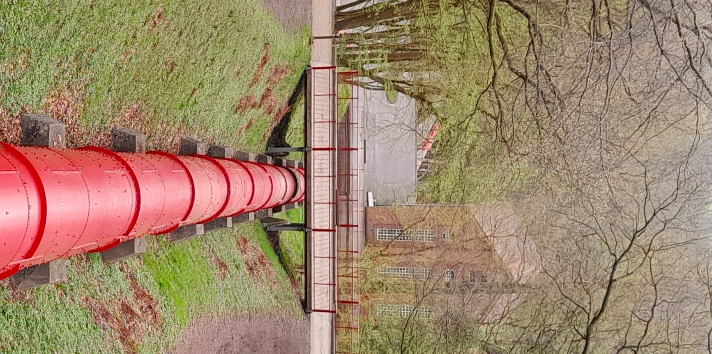

Metric completions of triangulated categories from hereditary rings
arXiv:2508.20283, 2025

About me
I am a third-year Ph.D. student of mathematics at Aarhus University, Denmark, under the supervision of Sira Gratz . My main research interests are homological algebra and the representation theory of quivers and finite-dimensional algebras. I currently work with triangulated and derived categories arising in representation theory. I am also interested in the approximation theory of modules.
I did my undergraduate studies at Charles University in Prague, Czech Republic. I wrote my master thesis "Module approximations and direct limits" and my bachelor theis "Testing the projectivity of modules" under the supervison of Jan Šaroch. During my master studies, I went for a semester Erasmus+ exchange stay at University of Franche-Comté in Besançon, France.
Preprints
Metric completions of triangulated categories from finite dimensional algebras
arXiv:2409.01828v2, 2024
Talks
Hereditary rings and metric completions of their derived categories at
Algebra and Algebraic Geometry Seminar.
Paderborn University, Germany, 22 October 2025
Hereditary rings and metric completions of their derived categories at
BIREP Seminar.
Bielefeld University, Germany, 15 October 2025
Metric completions from finite dimensional algebras at
Maurice Auslander Distinguished Lectures and International Conference.
Woods Hole, Massachusetts, USA, 23-28 April 2025
Continuous functors between triangulated categories with metrics at
Algebra Seminar.
Charles University, Prague, Czech Republic, 24 March 2025
Metric completions from finite dimensional algebras at conference
Triangulated Categories in Algebra and Geometry.
Charles University and Czech Academy of Sciences, Prague, Czech Republic, 23-27 September 2024
Teaching
In Autumn semester 2024/2025, I was teaching exercise sessions for Algebra undergraduate cousre at Aarhus University.
In Spring semester 2023/2024, I was tutoring Mathematical Laboratory (a drop-in session in mathematical analysis and linear algebra for undergraduate students) at Aarhus University.
In Autumn semester 2023/2024, I was teaching exercise sessions for Algebra undergraduate cousre at Aarhus University.